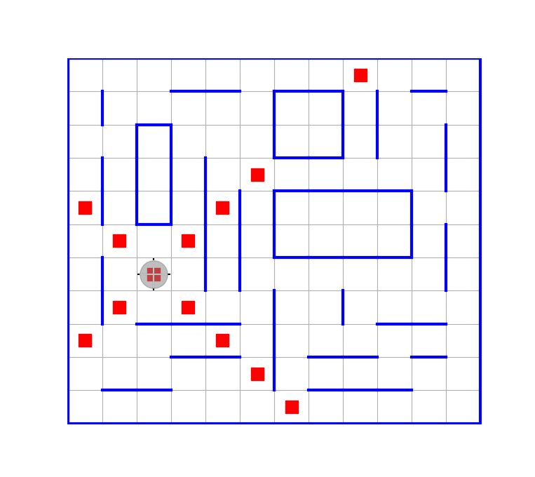

HorizonSideRobots.jl

HorizonSideRobots.jl — пакет для языка Julia, реализующий учебного исполнителя «Робот на клетчатом поле».
Пакет предназначен для поддержки начального курса программирования для студентов технического вуза, цель которого — научить писать хорошо структурированный программный код.
Выбор языка Julia не случаен: это современный язык общего назначения с выраженной ориентацией на технические и научные вычисления. Одной из центральных идей, лежащих в основе языка, является обобщённое программирование, основанное на множественной диспетчеризации и параметрическом полиморфизме. При этом Julia позволяет удачно сочетать императивный и функциональный стили программирования.
Идея предлагаемого вводного курса состоит в том, чтобы отделить обучение собственно проектированию программ от необходимости одновременного погружения в какую-либо сложную предметную область. В данном курсе всё внимание сосредоточено на вопросах проектирования: декомпозиции, технологии проектирования сверху вниз, принципах обобщённого программирования. По замыслу это должно создать надёжную базу для последующего изучения вычислительных алгоритмов и методов их проектирования.
Реализованный в пакете командный интерфейс Робота позволяет легко формулировать учебные задачи, сложность которых можно варьировать в достаточно широких пределах.
Курс задуман таким образом, чтобы по мере его освоения происходил постепенный переход от написания программ для решения конкретных задач к проектированию всё более высокоуровневых абстракций: специальных параметрических типов, их композиций, функций высшего порядка.
Предполагается, что результатом этой работы будет специальная библиотека обобщённых функций и соответствующих типов данных, позволяющая на основе правильно спроектированных абстракций единообразно и достаточно просто решать широкий спектр задач по программированию Робота на клетчатом поле.
Лежащие в основе курса методические идеи восходят к учебнику А. Г. Кушниренко и Г. В. Лебедева «Программирование для математиков», 1988.